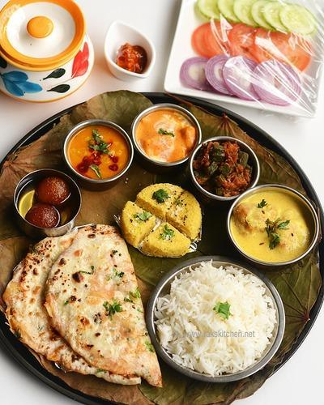
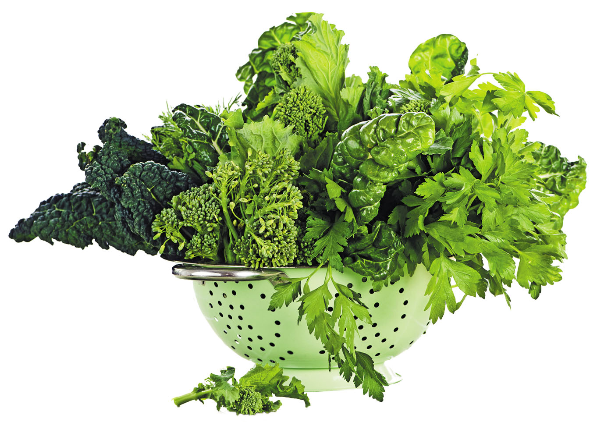
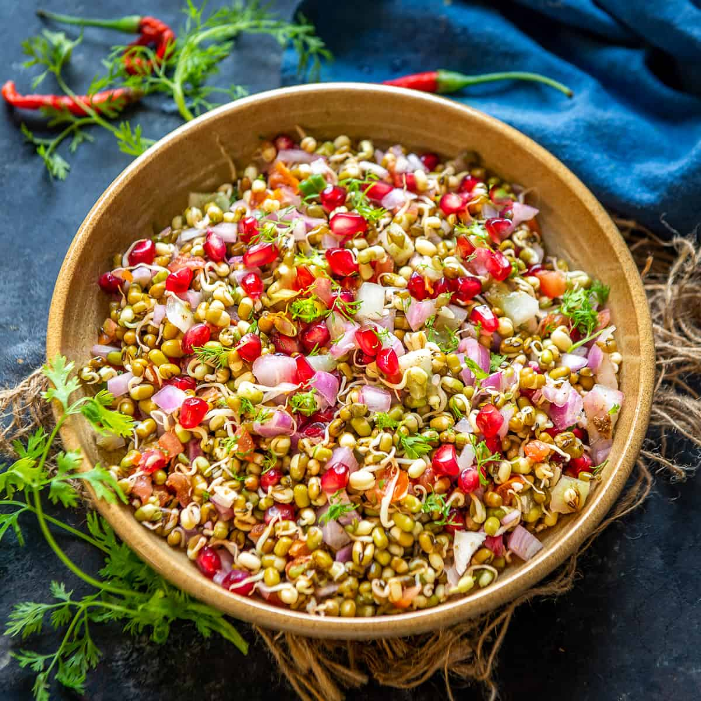
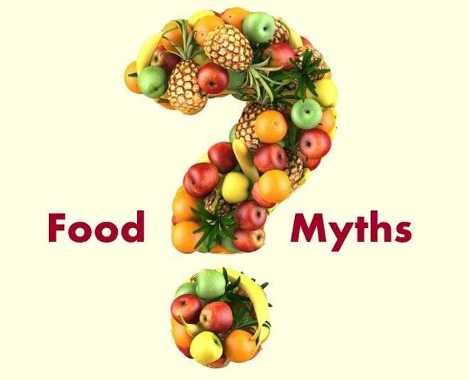
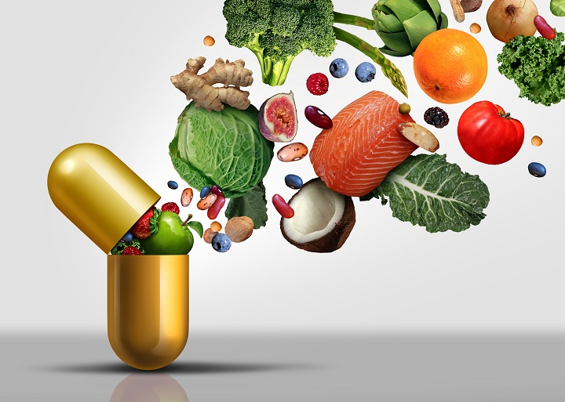
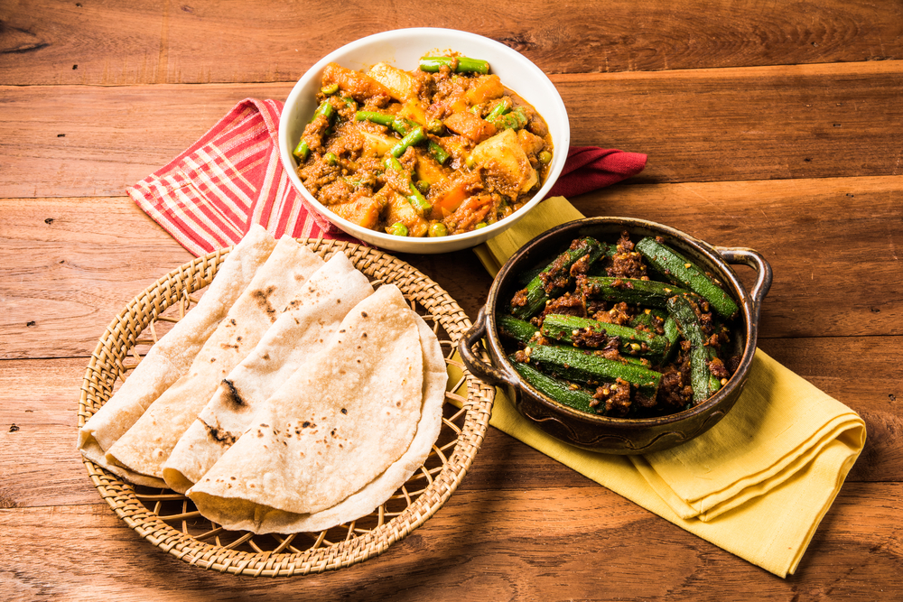

MOM'S KITCHEN
NOTHING IS AS GOOD AS HOMEMADE WITH LOVE
Homemade Food
Homemade recipes utilize a simple array of ingredients, that are natural, such as fresh vegetables, fresh fruits, and minimally processed.Additionally, processed foods contain artificial preservatives, sweetners, to keep the food tasting better for a long period of time. Indians are lucky in a way that our daily diet consists of abundant nutrients.
Admin
08-feb-2021
11:49am
Mom's Kitchen
Leafy Vegetables
Leafy green vegetables are an essential part of a healthy diet as they are rich in vitamin C, antioxidants, fibre, calcium, folate and high in protein per calorie. Eating a diet rich in leafy vegetables can offer many benefits including reduced risk of obesity, heart disease and high blood pressure.
Health Benefits of Leafy Vegatables:
- Weight management: Most green vegetables are low in calories. You can eat as much as you like without putting on extra weight.
- Mortality rate: Frequent consumption can substantially lower your mortality risk. Leafy greens contain vitamin K, Magnesium, the B vitamins, Calcium, amongst many other essential nutrients. These nutrients are critical for every cell function and hence, prevent the aging process and help us look youthful.
- Cardiovascular disease: Greens are low in fat, high in dietary fiber, and rich in folic acid, potassium, magnesium, vitamin C, and phytochemicals. One extra serving per day can lower the risk of cardiovascular disease by 11%.
- Type 2 diabetes: The high level of magnesium and low glycemic index that can be found in greens is ideal for preventing and treating diabetes. Studies showed that if you increase your intake of greens by just one serving per day, your risk of diabetes is lowered by 9%
- Bone health: The high levels of vitamin K, Magnesium, and calcium in leafy greens produces osteocalcin, the bone builders. Middle-aged women who eat over one serving of greens per day will lower their risk of a hip fracture by 45%.
- Immune function: The rich beta-carotene and Vitamin A improve the immune system.
- Protect eyes: Children who consume inadequate amounts of Vitamin A have a higher risk of going blind. Carotenoids (lutein and zeaxanthin) found in leafy greens are concentrated in the macular region of the retina and the lenses of the eye. A diet dominant in leafy greens protects the eyes from needing eye glasses in kids to macular degeneration and cataracts in adults.
- Cancer: Carotenoids, antioxidants, and flavonoids found in leafy greens protect from most cancer.
Sprouts
Sprouts are also known as nutrition powerhouse.They are low in calories and rich in fibre, enzymes, protein, and other nutrients. There are various health benefits from including sprouts in our diet.
- Sprouts offer a powerful source of vitamins, minerals, antioxidants, enzymes that fight free radicals as sprouting can increase their potency by 20 times more.
- Because they are oxygen dense they protect the body against bacteria, virus and abnormal cell growth.
- Sprouts are easy and cheap to grow and offer additional benefits by avoiding pesticides and other food additives.
Dairy Products Benefits
 Health benefits associated with dairy foods extend far beyond building and maintaining healthy bones and teeth. Having enough milk, yoghurt and cheese can also be good for heart health, blood pressure and maintaining a healthy weight.
Health benefits associated with dairy foods extend far beyond building and maintaining healthy bones and teeth. Having enough milk, yoghurt and cheese can also be good for heart health, blood pressure and maintaining a healthy weight.
- Digestive Health
- Bone Health
- Dental Health
- Weight Management
- Muscle mass and hydration
- Reducing risk of diseases
Myths About Food and Nutrition
- If you have diabetes, stay away from sugar and you’ll be fine
- The truth: “All foods have different effects on blood sugar levels,” says nutritionist Robyn Webb. “While sugar is nutritionally devoid, it’s the total number of carbohydrates that may play a role in blood sugar management. So it’s important to monitor blood sugar even after eating whole foods such as fruit, vegetables, and whole grains.”
- Fat makes you fat.
- The truth: Fat gets such a bad rap that we often forget there are such things as healthy fats, such as those found in nuts, olive oil, salmon, and avocados, says Nicole Ferring Holovach. Yes, fat grams do contain more calories than carbs or proteins, but fat is still an essential component of our diet. Adds Elise Museles: They “keep you satiated by slowing down the digestion process so you stay full for a longer period of time.”
- Eating more protein will lead to bigger muscles.
- The truth: “A myth perpetuated in gyms!” Webb says. “While eating protein is important, eating more than you need is unnecessary. Resistance training and exercises in which you use your body weight as resistance, such as yoga, can lead to a more defined look. But eating a ton a protein is not going to lead to large muscular development.”
- Muscle weighs more than fat.
- The truth: “Unless the laws of physics have changed, one pound is one pound is one pound,” says Elana Natker. “The difference is that muscle is denser than fat, so one pound of muscle takes up less space than a pound of fat.”
- Egg yolks are bad for you.
- The truth: Don’t waste those yolks anymore—they’re a “goldmine of nutrition,” says Holovach. One yolk contains half of your day’s requirement of choline, which is an essential nutrient for the brain. Plus recent research shows that dietary cholesterol doesn’t affect blood cholesterol levels as much as previously thought, Holovach adds. Eggs for breakfast will fill you up with protein and fat and will keep you from overeating the rest of the day.
Importance of Seasonal Fruits and Vegetables
The Seasonal Fruits and Vegetables have all essential nutrients and vitamins our body needs in that particular season. Also, it keeps us in Harmony with Nature. Eating seasonal fruits and vegetables is not only healthy but tastes better as well. Seasonal consumption is not only good for health but also good for the pocket. The farmers harvest the produce in abundance, which is why the cost of the product is sure to lessen.
Indian Foods that Boost Immunity
Including immunity boosting and healthy food in your daily diet will make you feel good, healthy, and it will make your immune system strong. This will in turn help you to stay away from diseases. So, you might be probably wondering what are the immunity boosting Indian foods that I can easily find. Here are a few immunity boosting food suggestions to help you get started.
- Ghee
- Tulsi Leaves
- Amla
Many of you might be surprised to see Ghee in the list of immunity boosting Indian foods. This is mainly because there is a common misconception that clarified butter or Ghee is fattening. However, ghee is one of the healthiest Indian super foods available out there and it is something you should definitely include on your daily diet.
Tulsi leaves offer plenty of health benefits. In fact, the health benefits of tulsi leaves have been vouched by both science and Ayurveda. The green tulsi leaves are available in most Indian households, but most people are not aware about the immunity boosting properties of tulsi leaves.
The expectorant, antitussive, and immunomodulatory properties of tulsi leaves will help in immunity boosting along with keeping your lungs clean. Having tea in the evening with Tulsi leaves or simply chewing them in the morning before having breakfast will surely keep you healthy.
Amla berries are rich in antioxidants, which reduce the risk of chronic health conditions like heart disease, diabetes, and cancer. Amla is a highly potent medicinal plant for its innumerable healing properties.Amla also helps in cleansing the colon, which will result in the removal of excess toxins from the body.
In addition to that, Amla is quite effective when it comes to a number of skin related issues. So, it would be a good idea to include Amla in your diet.
Everything you need to know about food during pregnancy!
If you are someone who puts a lot of thought into the food you eat, then, the thinking just doubles when you are pregnant. When you are pregnant, you are making food choices for yourself and the baby. Thanks to the way Indian society is, we are never short of advice. You will get those from all sides when you are pregnant.
Sometimes, what two people advice might funnily contradict too. Just laugh it off because we know after a point it may get on to your nerves. That’s why we are here giving you tips backed by facts and science that will help you with your diet during pregnancy.
Here are a few things that you should consider eating throughout your pregnancy
- Fiber
- Calcium
- Zinc
Wholegrain foods, such as wholemeal bread, wild rice, wholegrain pasta, pulses like beans and lentils, fruit, and vegetables are rich in fiber.
Women have a higher risk of developing constipation during pregnancy; eating plenty of fiber is effective in minimizing that risk. Studies have shown that eating plenty of fiber during pregnancy reduces the risk or severity of hemorrhoids, which also become more common as the fetus grows
It is important to have a healthy daily intake of calcium. Dairy foods, such as cheese, milk, and yogurt are rich in calcium. If the mother is vegan, she should consider the following calcium-rich foods; calcium-fortified soymilk and other plant milks and juices, calcium-set tofu, soybeans, bok choy, broccoli, collards, Chinese cabbage, okra, mustard greens, beans, kale, and soynut
Zinc is a vital trace element. It plays a major role in normal growth and development, cellular integrity, and several biological functions including nucleic acid metabolism and protein synthesis.
Since all these functions are involved in growth and cell division, zinc is important for the development of the fetus. The best sources of zinc are chicken, turkey, ham, shrimp, crab, oysters, meat, fish, dairy products, beans, peanut butter, nuts, sunflower seeds, ginger, onions, bran, wheat germ, rice, pasta, cereals, eggs, lentils, and tofu.
Healthy Indian Diet
Most of us know the main principles of a healthy diet - getting a good balance of the food groups, eating plenty of fruit and veg, keeping topped up on water. But sometimes getting the principles into practice is a bit of a chore - and coming up with healthy meal ideas for breakfast, lunch and dinner on a daily basis can zap your healthy eating inspiration.

Indian diet consists of roti, rice, dal, chutney, pickle, beans and legumes along with meat or chicken or fish.While we know how healthy Indian food is, where we often go wrong with is our over-indulgence in fried Indian snacks. These are usually consumed after 6 pm and result in bulging tummies and high fat percentages. This is the first step towards all kinds of lifestyle issues like diabetes, thyroid, obesity, pcod etc.
Some basic tweaks in your everyday diet can help you keep problems at bay.
- Controlling your portion size: Every extra roti on your plate adds an extra 80-90 calories. Similarly, an additional serving of rice adds 100 calories.
- Refrain from fried food: Since we often hog on fried snacks, opting for boiled, steamed, pressure-cooked, sautéed or broiled food. The method of cooking really helps preserve the nutrient quotient of food.
- Reducing salt intake: As Indians, we tend to eat dinner post 8 pm. Sodium retains water in the body and hence leads to you feeling groggy in the morning. Since our salt consumption is high through the day, start reducing your intake by half teaspoon.
- Spices: Indian cuisine is rich in whole spices. Let your food be cooked with whole spices like kadi patta, cardamom and cinnamon. Rather than using more fat to flavour your food, use spices.
- Relying on grains: Don’t only limit yourself to atta rotis, you can try different varieties like bajra, jowar, makki, or dry dals to make delicious rotis.